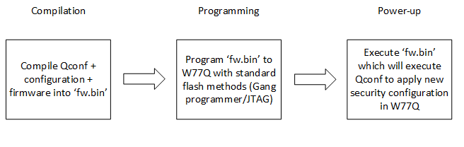
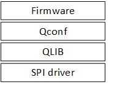
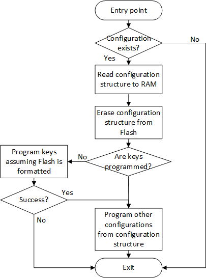

|
QLIB Library User Guide
|
|
|
QLIB Library User Guide
|
|
W77Q/T devices can be configured through either the qlib.h API or the qconf.h API. In most cases, the qlib.h API is the preferred approach and is also used in the sample code.
The QLIB API is the primary method for configuring a device and is used by the manufacturing flows in the sample code. Configuration operations can change the flash access policy. If the system uses execute-in-place (XIP), carefully coordinate access to the flash between QLIB and the microcontroller.
The following configuration APIs are declared in qlib.h:
Refer to the QLIB sample code for details. Each sample's manufacturing flow uses the qlib.h API.
Qconf is a software library that configures W77Q/T devices during firmware startup. The configuration is included in the image when it is programmed to flash. When the firmware starts, Qconf locates the configuration by its magic number, configures the flash, and erases that location so the configuration is not applied again on the next startup. Qconf can be used for development or production, but it requires firmware to run on the target. Qconf extends the standard QLIB functionality and is not part of the core QLIB implementation.
The basic Qconf flow is shown below:

First-time configuration is common in both production and development. W77Q/T devices are supplied formatted and configured as standard flash. To configure a W77Q/T device using Qconf, follow these steps:
fw.bin.fw.bin to the W77Q/T device using standard flash-programming methods.See QCONF_Config for details.
If the W77Q/T configuration or code area is corrupted—for example, due to a power failure during one of the steps above—the recovery flow formats the device and restores its legacy access configuration. See the QCONF_Recovery section for details.
Qconf is a library built on top of QLIB and used by the main customer firmware.

The following flowchart illustrates the main Qconf algorithm:

The Qconf flow is implemented by the QCONF_Config function.
The user supplies a single Qconf configuration structure containing the W77Q/T configuration and key values to be deployed. These values are stored in plaintext. The structure must reside in a read-only flash region. Qconf erases this structure from flash before applying the configuration. Storing the structure in read-only memory is intended to prevent misuse of this mechanism.
Integrate Qconf into the target firmware and call it at every power-up after initializing QLIB.
For example:
This structure contains configuration values that can be applied only once, after formatting or to a factory-formatted device. To program new values into this structure, use QCONF_Recovery.
The Qconf configuration structure contains the configuration required by QLIB_ConfigDeviceMultiDie. QCONF_Config uses this structure to configure or reconfigure W77Q/T. In some cases, the configuration can be reapplied without formatting the device.
For example, read-only sections can be reprogrammed only after running QCONF_Recovery.
Call this function during firmware startup and pass it the address of the Qconf configuration structure. The structure must reside in a read-only flash region to prevent misuse of this function.
Run this function from recovery firmware executing in RAM and pass it the Qconf OTC configuration structure. The recovery firmware must load the structure into RAM.
 1.9.4
1.9.4